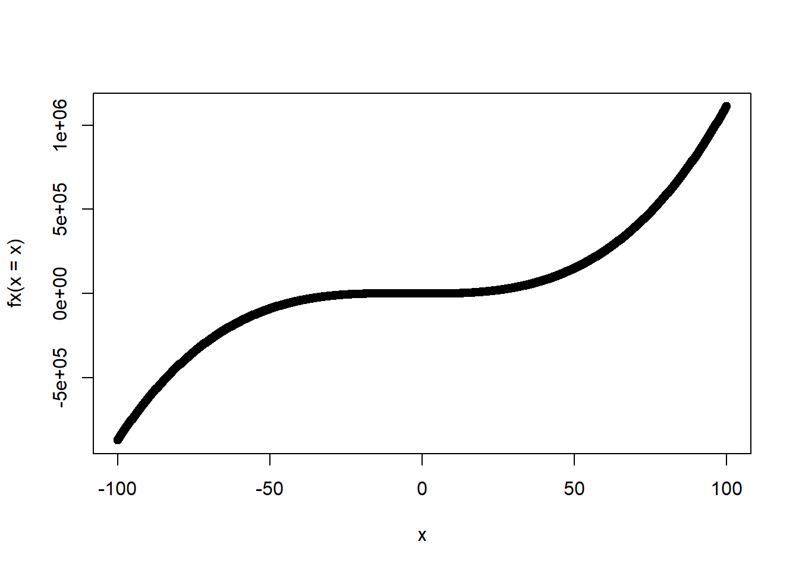

fx <- function(x) {x^2 - exp(-x)}
uniroot(f = fx, interval = c(0, 10))$root
[1] 0.7034674
$f.root
[1] -1.259452e-07
$iter
[1] 11
$init.it
[1] NA
$estim.prec
[1] 6.103516e-05Os objetivos deste tutorial são:
fx <- function(x) {x^2 - exp(-x)}
uniroot(f = fx, interval = c(0, 10))$root
[1] 0.7034674
$f.root
[1] -1.259452e-07
$iter
[1] 11
$init.it
[1] NA
$estim.prec
[1] 6.103516e-05fx <- function(x){x^3 - 155}
uniroot(f = fx, interval = c(0,155))$root
[1] 5.371671
$f.root
[1] -0.00127558
$iter
[1] 15
$init.it
[1] NA
$estim.prec
[1] 6.103516e-05require(rootSolve)Carregando pacotes exigidos: rootSolvefx <- function(x){x^3 + 12*x^2 - 100*x - 6}
x = seq(-100, 100, l = 1000)
plot(fx(x = x) ~ x)
uniroot.all(fx, interval = c(-100, 100))[1] -17.64731834 -0.05960381 5.70692497Use o método de Newton.
# Algoritmo do método de Newton
newton <- function(fx, jacobian, x1, tol = 1e-04, max_iter = 10) {
solucao <- matrix(NA, ncol = length(x1), nrow = max_iter)
solucao[1,] <- x1
for(i in 1:c(max_iter+1)) {
J <- jacobian(solucao[i,])
grad <- fx(solucao[i,])
solucao[i+1,] = solucao[i,] - solve(J, grad)
if( sum(abs(solucao[i+1,] - solucao[i,])) < tol) break
}
return(solucao)
}
## Sistema a ser resolvido
fx <- function(x) {
term1 <- 4*x[1]^2 - x[2]^3 + 28
term2 <- 3*x[1]^3 + 4*x[2]^2 -145
output <- c(term1, term2)
return(output)
}
# Jacobiano
Jacobian <- function(x) {
e11 <- 8*x[1]
e12 <- -3*x[2]^2
e21 <- 9*x[1]^2
e22 <- 8*x[2]
output <- matrix(c(e11,e21,e12,e22), 2, 2)
return(output)
}
sol <- newton(fx = fx, jacobian = Jacobian, x1 = c(1,1), max_iter = 15)
sol [,1] [,2]
[1,] 1.000000 1.000000
[2,] 2.824176 16.197802
[3,] -0.914253 10.767332
[4,] -3.549482 7.323755
[5,] -1.811525 5.063003
[6,] 3.073706 2.989503
[7,] 2.954785 4.337769
[8,] 2.995994 4.023796
[9,] 2.999982 4.000130
[10,] 3.000000 4.000000
[11,] 3.000000 4.000000
[12,] NA NA
[13,] NA NA
[14,] NA NA
[15,] NA NAUse o método do gradiente descendente.
# Algoritmo do método do gradiente descendente
grad_des <- function(fx, x1, alpha, max_iter = 100, tol = 1e-04) {
solucao <- matrix(NA, ncol = length(x1), nrow = max_iter)
solucao[1,] <- x1
for(i in 1:c(max_iter-1)) {
solucao[i+1,] <- solucao[i,] - alpha*fx(solucao[i,])
#print(solucao[i+1,])
if( sum(abs(solucao[i+1,] - solucao[i,])) < tol) break
}
return(sol)
}
## Sistema a ser resolvido
fx <- function(x) {
term1 <- 4*x[1]^2 - x[2]^3 + 28
term2 <- 3*x[1]^3 + 4*x[2]^2 -145
output <- c(term1, term2)
return(output)
}
sol <- grad_des(fx = fx, x1 = c(1,1), alpha = 0.01)
sol [,1] [,2]
[1,] 1.000000 1.000000
[2,] 2.824176 16.197802
[3,] -0.914253 10.767332
[4,] -3.549482 7.323755
[5,] -1.811525 5.063003
[6,] 3.073706 2.989503
[7,] 2.954785 4.337769
[8,] 2.995994 4.023796
[9,] 2.999982 4.000130
[10,] 3.000000 4.000000
[11,] 3.000000 4.000000
[12,] NA NA
[13,] NA NA
[14,] NA NA
[15,] NA NAnewton <- function(fx, f_prime, x1, tol = 1e-04, max_iter = 10, ...) {
solucao <- c()
solucao[1] <- x1
for(i in 1:max_iter) {
solucao[i+1] = solucao[i] - fx(solucao[i], ...)/f_prime(solucao[i], ...)
if( abs(solucao[i+1] - solucao[i]) < tol) break
}
return(solucao)
}
fx <- function(x, p) x^2 - p
dfx <- function(x, p) 2*x
my_sqrt <- function(x) {
if(x < 0) {stop("Número precisa ser maior que 0.")}
out <- newton(fx = fx, f_prime = dfx, x1 = x/2, p = x)
return(out[length(out)])
}
my_sqrt(10)[1] 3.162278dx() que calcula a derivada númerica obtida no ponto \(x = 2\) e retorna o seu valor. Para usar a correção automática a linha final do seu código deve ser dx(x = 2). Use \(h = 0.010\).dif_cen <- function(fx, x, h) {
df <- (fx(x + h) - fx(x - h))/( (x + h) - (x - h))
return(df)
}
fx <- function(x) 3*x
dx <- function(x) {dif_cen(fx = fx, x = x, h = 0.01)}
dx(x = 2)[1] 3dif_cen <- function(fx, x, h) {
df <- (fx(x + h) - fx(x - h))/( (x + h) - (x - h))
return(df)
}
fx <- function(x) sin(x^2)
dx <- function(x) {dif_cen(fx = fx, x = x, h = 0.01)}
dx(x = 2)[1] -2.613575dif_cen <- function(fx, x, h) {
df <- (fx(x + h) - fx(x - h))/( (x + h) - (x - h))
return(df)
}
fx <- function(x) (3*x^2 + 1)^3
dx <- function(x) {dif_cen(fx = fx, x = x, h = 0.01)}
dx(x = 2)[1] 6084.454dif_cen <- function(fx, x, h) {
df <- (fx(x + h) - fx(x - h))/( (x + h) - (x - h))
return(df)
}
fx <- function(x) log(x^2 + 3)
dx <- function(x) {dif_cen(fx = fx, x = x, h = 0.01)}
dx(x = 2)[1] 0.5714266dif_cen <- function(fx, x, h) {
df <- (fx(x + h) - fx(x - h))/( (x + h) - (x - h))
return(df)
}
fx <- function(x) (x^2)*exp(3*x)
dx <- function(x) {dif_cen(fx = fx, x = x, h = 0.01)}
dx(x = 2)[1] 6456.434dif_cen <- function(fx, x, h) {
df <- (fx(x + h) - fx(x - h))/( (x + h) - (x - h))
return(df)
}
fx <- function(x) log(x^2 + 3 * x + 9)
dx <- function(x) {dif_cen(fx = fx, x = x, h = 0.01)}
dx(x = 2)[1] 0.3684208dif_cen <- function(fx, x, h) {
df <- (fx(x + h) - fx(x - h))/( (x + h) - (x - h))
return(df)
}
fx <- function(x) sqrt(x + exp(x))
dx <- function(x) {dif_cen(fx = fx, x = x, h = 0.01)}
dx(x = 2)[1] 1.368908area.require(pracma)Carregando pacotes exigidos: pracma
Attaching package: 'pracma'The following object is masked _by_ '.GlobalEnv':
newtonThe following objects are masked from 'package:rootSolve':
gradient, hessiangauss_legendre <- function(integrando, n_pontos, a, b, ...){
pontos <- gaussLegendre(n_pontos, a = a, b = b)
integral <- sum(pontos$w*integrando(pontos$x,...))
return(integral)
}
fx <- function(x) {x^2}
area <- gauss_legendre(integrando = fx, a = 1, b = 2, n_pontos = 250)require(pracma)
gauss_legendre <- function(integrando, n_pontos, a, b, ...){
pontos <- gaussLegendre(n_pontos, a = a, b = b)
integral <- sum(pontos$w*integrando(pontos$x,...))
return(integral)
}
fx <- function(x) {x^3 + 3*x - 1}
area <- gauss_legendre(integrando = fx, a = 0, b = 2, n_pontos = 250)require(pracma)
gauss_legendre <- function(integrando, n_pontos, a, b, ...){
pontos <- gaussLegendre(n_pontos, a = a, b = b)
integral <- sum(pontos$w*integrando(pontos$x,...))
return(integral)
}
fx <- function(x) {exp( - ((x - 5)^2)/2 )}
area <- gauss_legendre(integrando = fx, a = -150, b = 150, n_pontos = 250)require(pracma)
gauss_legendre <- function(integrando, n_pontos, a, b, ...){
pontos <- gaussLegendre(n_pontos, a = a, b = b)
integral <- sum(pontos$w*integrando(pontos$x,...))
return(integral)
}
fx <- function(x) {exp(-abs(x - 5)/2 )}
area <- gauss_legendre(integrando = fx, a = 0, b = 150, n_pontos = 250)require(pracma)
gauss_legendre <- function(integrando, n_pontos, a, b, ...){
pontos <- gaussLegendre(n_pontos, a = a, b = b)
integral <- sum(pontos$w*integrando(pontos$x,...))
return(integral)
}
fx <- function(x) {(1/x + 1/x^3)}
area <- gauss_legendre(integrando = fx, a = 1, b = 2, n_pontos = 250)valor.# Dados do exercício
y <- c(2.09, -1.32, -0.20, 0.05, -0.07)
f <- function(mu) {sum( (y - mu)^2) }
f <- Vectorize(FUN = f, vectorize.args = "mu")
temp <- optim(par = c(2), fn = f, method = "Nelder-Mead")Warning in optim(par = c(2), fn = f, method = "Nelder-Mead"): one-dimensional optimization by Nelder-Mead is unreliable:
use "Brent" or optimize() directlyvalor <- temp$valueBFGS.# Dados do exercício
y <- c(7, 4, 4, 6, 5)
f <- function(mu) {sum(2*(y*log(y/mu) + mu - y) )}
f <- Vectorize(FUN = f, vectorize.args = "mu")
temp <- optim(par = c(2), fn = f, method = "BFGS")
valor <- temp$value# Dados do exercício
y <- c(2.35, 0.16, 0.56, 1.05, 0.51)
f <- function(mu) {sum(2*((y/mu) - log(y/mu) -1 ))}
f <- Vectorize(FUN = f, vectorize.args = "mu")
temp <- optim(par = c(2), fn = f, method = "CG")Warning in log(y/mu): NaNs produzidos
Warning in log(y/mu): NaNs produzidosvalor <- temp$valueL-BFGS-B que é uma modificação do algoritmo BFGSque permite controlar o espaço de busca. Fixe o intervalo de busca como \((0,1)\).# Dados do exercício
y <- c(1,0,0,1,1)
f <- function(mu) {
temp <- c()
for(i in 1:length(y)) {
if(y[i] == 1) { temp[i] <- y[i]*log(y[i]/mu) }
if(y[i] == 0) { temp[i] <- (1-y[i])*log( (1-y[i])/(1-mu) ) }
}
return(sum(2*temp))
}
f <- Vectorize(FUN = f, vectorize.args = "mu")
temp <- optim(par = c(2), fn = f, method = "L-BFGS-B", lower = 1e-10, upper = 0.99999)
valor <- temp$value# Dados do exercício
y <- c(7,4,4,6,5)
f <- function(mu) {sum (2*( y*log(y/mu) + (10 + y)* log( (10+mu)/(10 + y) ))) }
f <- Vectorize(FUN = f, vectorize.args = "mu")
optim(par = 0.5, fn = f, method = "Brent", lower = 0, upper = 20)$par
[1] 5.2
$value
[1] 0.8447918
$counts
function gradient
NA NA
$convergence
[1] 0
$message
NULL